Professional talent representation across theatre, television, film, commercials and live performance.
Apply for RepresentationArts Nexus Talent is an independent talent agency based in Staffordshire, West Midlands, representing emerging and established performers across theatre, musical theatre, television, film, commercials, dance, voice-over and live performance.
Founded by Amy Davies, who comes from a performance background, the agency was established with a passion for supporting talented individuals and helping them access opportunities within the entertainment industry. With a particular focus on young and emerging performers, Arts Nexus Talent is committed to making professional opportunities more accessible to those outside London, especially across the North of England.
We work closely with our clients to identify suitable casting opportunities, manage submissions and build positive relationships with casting directors and production teams. Our aim is to provide dedicated, approachable representation that supports performers as they develop their careers and take their next steps in the industry.
Alongside our agency work, we run The Nexus Sessions, a programme of monthly casting and industry workshops designed to help young performers develop their skills, build confidence and gain valuable industry insight.
Discover The Nexus Sessions